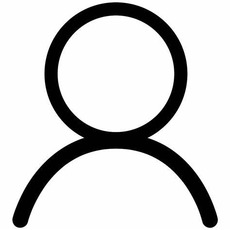

Gio Nassif Rizk
Address:Beirut,Lebanon - Phone:AA/AAAAAA
Date of Birth:1/5/2003
Email:gio.rizk023@gmail.com
EDUCATION:
-2006 till 2021-
Collège Central Jounieh.
Lebanese Baccalaureate in General Science .
-September 2021-present-
University:Holy Spirit University Of Kaslik(USEK).
Year:Second year.
Major:Computer Engineering.
GPA:80/100.
SKILLS:
Language Skills:
Soft Skills:
- leadership
- creative
- multipletasking
Technical Skills:
- WINDOWS APPLICATION.
- JAVA.
- SQL.
- C++.
- HTML.